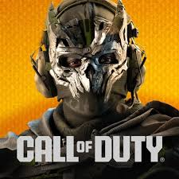

Call of Duty: Warzone es un videojuego de disparos en primera persona del género battle royale, lanzado en marzo de 2020 como parte de la franquicia Call of Duty. En este título, grandes escuadrones de jugadores caen sobre enormes mapas, recolectan equipo, sobreviven al combate intenso y tratan de ser el último en pie. Su éxito proviene de combinar la jugabilidad característica de Call of Duty —precisión, arma y ritmo rápido— con la estructura de supervivencia y exploración propia del género battle royale.
Warzone fue desarrollado por estudios como Infinity Ward y Raven Software, y publicado por Activision. Estos equipos continuaron la tradición de la serie Call of Duty, adaptando su motor y mecánicas para un entorno multijugador masivo y gratuito, sustentado por temporadas, eventos y soporte en diversas plataformas (PC, consolas).
Warzone sigue recibiendo contenido nuevo, mejoras de calidad, ajustes de balance y renovaciones de mapa. Por ejemplo, en 2024-2025 se anunció el regreso del mapa clásico Verdansk, y se está preparando una nueva modalidad inspirada en Blackout para 2026. Además, los desarrolladores han reforzado el sistema antitrampas RICOCHET y optimizado el gameplay competitivo con cambios en ventajas, armas y servidores para mejorar la experiencia global.